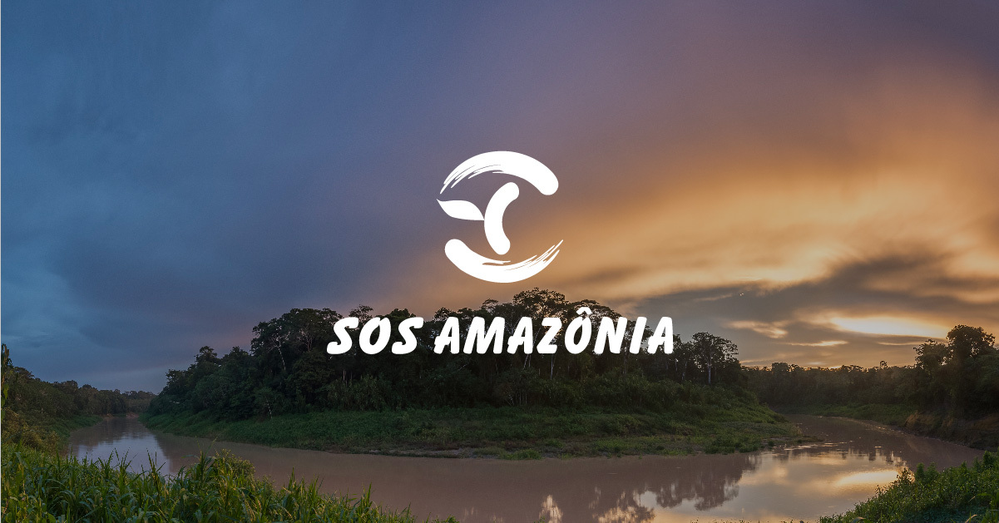

Diversas ONGs e instituições independentes de interesses governamentais ou comerciais continuam a mobilizar seus esforços para frear o caos ambiental que estamos vivenciando. Se você já pensou em ajudar a plantar árvores e não sabe por onde começar, confira a lista com alguns projetos relevantes de reflorestamento e recuperação de áreas degradadas:
Basta clicar na imagem que você será redirecionado as instituições:

Inicio

voltar